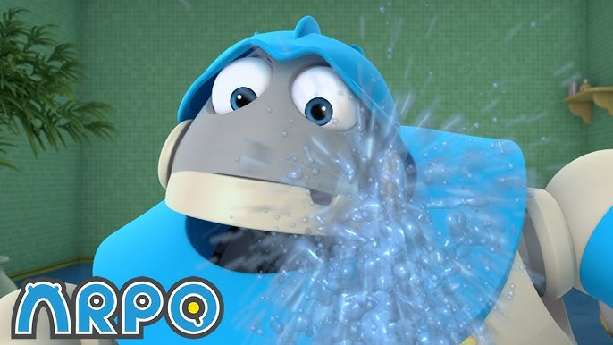

Você sabe quanta água é gasta a cada pergunta à inteligência artificial? Especialista explica
Com 400 milhões de usuários semanais, o gasto de água feito pelo ChatGPT pode chegar a 200 milhões de litros por semana, o que abasteceria uma cidade média.
E a pergunta que fica, "Precisamos tanto assim de agua?"
Escrito por - As vozes da minha cabeça